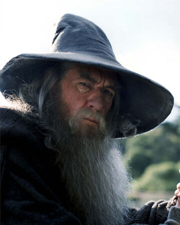
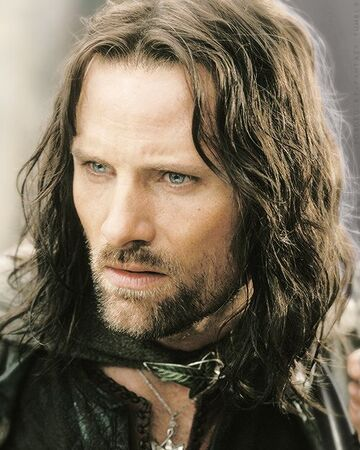
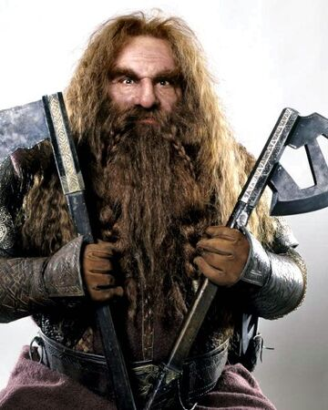
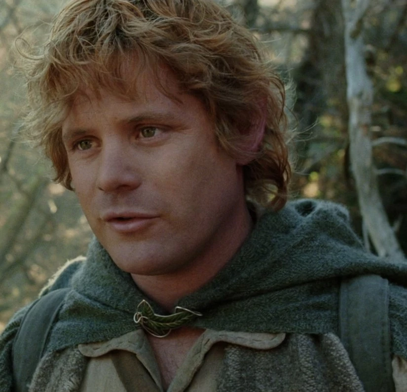
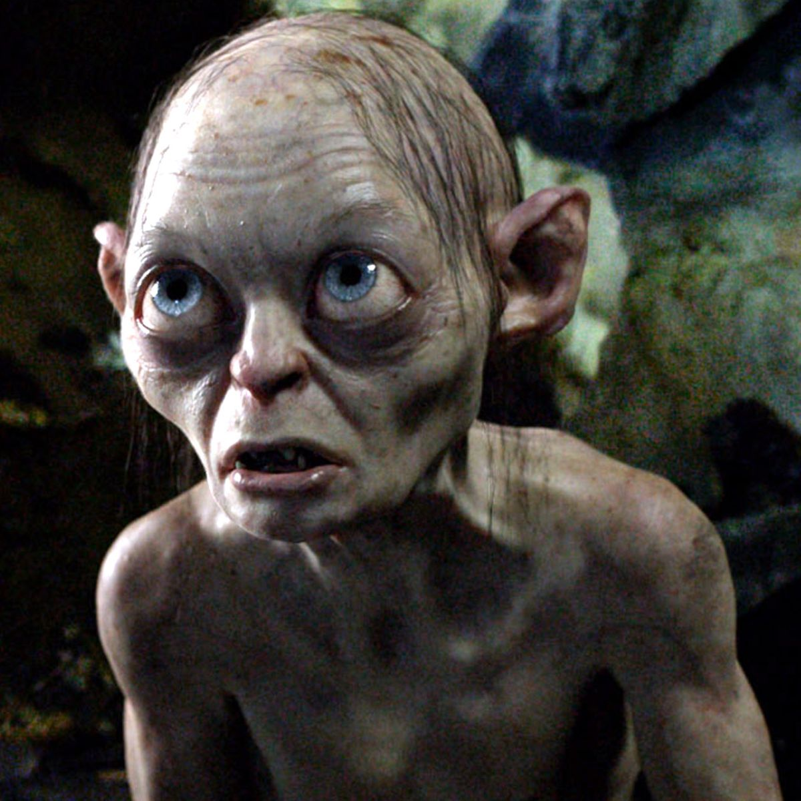

Characters

Gandalf the Grey, later known as Gandalf the White, and originally named Olórin, was an Istar (Wizard), sent to Middle-earth in the Third Age to combat the threat of Sauron. He joined Thorin and his company to reclaim the Lonely Mountain from Smaug, convoked the Fellowship of the Ring to destroy the One Ring, and led the Free Peoples in the final campaign of the War of the Ring.

Aragorn II, son of Arathorn II and Gilraen, also known as Elessar and Strider, was the 16th Chieftain of the Dúnedain of the North; later crowned King Elessar Telcontar, the 26th King of Arnor and 35th King of Gondor - and first High King of Gondor and Arnor since the short reign of Isildur. He was a great ranger and warrior, and as Isildur's heir he bore the shards of Narsil.

Gimli, son of Glóin, was a well-respected dwarf warrior in Middle-earth during the Great Years. He was a member of the Fellowship of the Ring and was the only one of the dwarves to readily fight alongside elves in the war against Sauron at the end of the Third Age

Frodo Baggins, son of Drogo Baggins, was a Hobbit of the Shire during the Third Age. He was, and still is, Tolkien's most renowned character for his leading role in the Quest of the Ring, in which he bore the One Ring to Mount Doom, where it was destroyed. He was a Ring-bearer, best friend to his gardener, Samwise Gamgee, and one of the three Hobbits who sailed from Middle-earth to the Uttermost West at the end of the Third Age.

Samwise Gamgee, known as Sam, was a Hobbit of the Shire. He was Frodo Baggins' gardener and best friend. Sam proved himself to be Frodo's closest and most dependable companion, the most loyal of the Fellowship of the Ring, and played a critical role in protecting Frodo and destroying the One Ring.
